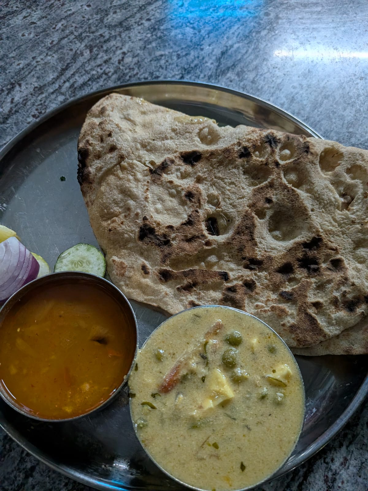
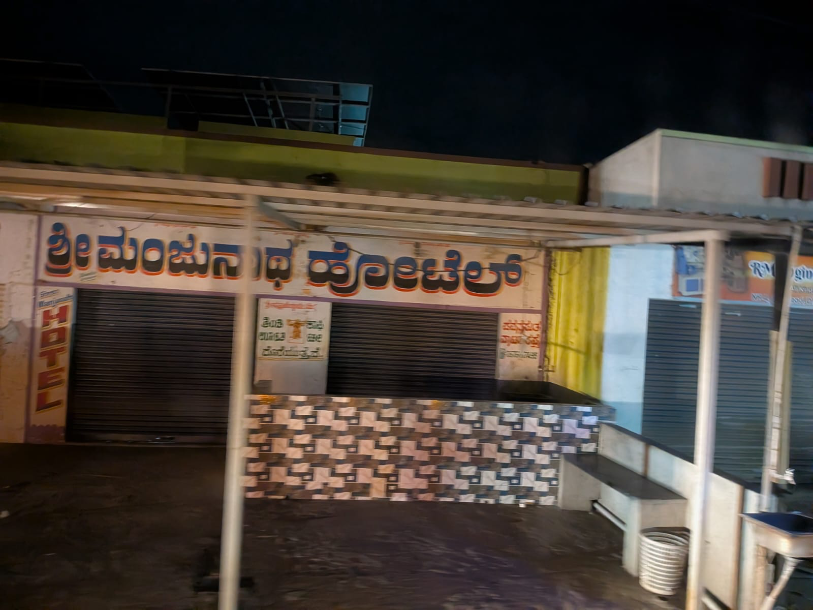

Back to blog
Jhamkhandi trip on July 1, 2026
curated parts of a 1 day trip
July 2, 2026
This
is where Jhamkhandi is. It's where my dad is from. It's pretty much middle
of nowhere. As middle of nowhere as it gets. I went there to attend a
pooja and wanted to write down how my trip was.
Dhruva came to drop me off and he waited until the bus left. I felt really
loved. To be cared for like this is a blessing.
I took a VRL as one does when travelling bangalore to jhamkhandi/bijapur.
It was a sleeper bus, recently they changed the mattresses to have an
elevation at the base of the seat to mimic a pillow. My favourite part of
this journey is sitting and watching trees pass by in my window. I could
not sit anywhere and watch it because I'd slide off the elevated end
because my ass is huge and now I had to sit in the middle of the sleeper
seat like a psycho and not have back support. I closed the curtains in the
hopes that nobody would see my psycho behaviour. Travelling alone as a
girl is always scary and when its a 12 hour bus where you need to get down
and eat alone + pee, it's even scarier.
They stopped at VRL owned restaurant on the highway. My UPI was not
working so I carried cash, I gave cash and I got change back, no questions
asked. Oh, the bliss. The food was mid af. The dal was watery, the paneer
dish was ok and the peas were hella bad. The roti was ok

Whilst eating, a man asked me if anyone else was joining me and sat in
front of me when I said no. The whole restaurant was empty except me, a
group on a different table (two guys and a girl, the two guys turned
around a little too many times in my direction that also built some
anxiety) and the other VRL drivers that stopped to get a meal; almost 15
empty tables . I was terrified, I did not want to be spoken to - because I
always overshare and most likely this man was also traveling with me on
the same bus. But I really wanted to make conversation. It reminds me of
this quote
"Yes, my consuming desire is to mingle with road crews, sailors and
soldiers, barroom regulars—to be a part of a scene, anonymous,
listening, recording—all this is spoiled by the fact that I am a girl, a
female always supposedly in danger of assault and battery."
- Sylvia Plath
I quickly shoved down whatever I could and left. And in the washroom I
realise - I got my period, great.
Went back to my seat and closed the curtains. The night was cold and
cloudy, sadly no stars. Watched more trees and suddenly there it was

Earlier that day I showed Dhruva how I used to write the "oo" matra from
below the ha word and he said no, that's not right and it's always written
starting next to it like this "ಹೂ" Seeing this hotel writing hoo
the way I write, made me so happy that I sent it to him, sitting firm,
happy and confident that I was right lol. Big W.
More travel, more travel. Pretty trees, pretty lights and some roads only
lit by the bus headlights. I will always love a VRL ride.
So grateful.
I napped being coddled by the bus going on humps and taking aggressive
turns with the speed you can only achieve on inter-city roads. I was happy
falling asleep. So cold outside, me warm in my hoodie inside.
I wake up at 5am from the bus announcing that we've reached Bagalkot.
Nostalgia hit me because I visited a couple of summers in Bagalkot when my
grandparents lived there whilst my grandpa was a headmaster in a school. I
text my brother and he's also up, probably anxiously waiting for me to
arrive so he can come pick me up.
As I reached close to Jhamkhandi, I saw people defecating outside. Feeling
a pang of guilt that I was from here too and how much luck and privilege
has carried me to be where I am. Not even having the privacy to do this
made me incredibly sad. It was also surprising to see many places having
UPI but not toilets. Progress for the sake of progress.
Whilst still in the bus, I see my brother standing nearby the pickup point
, I get down and see that my dad, grandpa and my brother have come to pick
me up. I just wanted to hangout with my brother for sometime before full
socialization. But alas.
I was tired and my cramps were getting really bad. I took my medication
and went to sleep. Waking up an hour later, the pain is still there and
now I'm uncomfortable with how wet everything feels. In pain, I get up to
have a bath. Bathed and ready, hoping something would give my face some
colour. We went to the pooja, crampmaxing I skip breakfast and lunch that
looked and smelled divine. Upma for breakfast and puri, palak paneer,
yennegai, masala rice for lunch. It was probably once in a decade
opportunity that I let pass me by just so I didn't puke. More relatives,
more socialising and I sat down.
My dad's cousin sits down next to me and is telling me how he's not seen
me since I was a paapu in his wedding and I call bullshit "I literally saw
you two years ago". Now the conversation shifts and I wish I could just
sink and die.
"It's been like 4 years now you've been working, don't you think it's time
to quit?"
"Quit and do what?"
"Stay close to your dad, help out?"
"But I like what I do?"
I cannot believe this man was trying to convince me to leave my job and
just depend on my dad? Like, god am I tired. I just wanna do my clickitty
clack clack, who am I hurting? Why are they so adamant about me not
working? What are you scared of? He could've asked me what I'm doing, what
I want to do, what my aspirations are. When I told my brother about this,
he said that he's just joking. Whatever he said was so persuasive, I
refuse to believe this was in good humor. My family just does not like
that I'm living alone like this. And they do not understand how much I'd
have to give up to live like them, with them. Not that how they live is
wrong, but how I'm living now feels right to me.
Still period cramping, me and bro took off to the next town to go around
and my dad made us take our second cousin. It was lovely, we drove around
and it was cloudy. I got to talk to him more and it was nice. Our
conversation centered around how me being the first kid in all my cousins
+ being an overachiever impacted everyone. Every single one of my cousins
is studying engineering except my brother who had to fight to study what
he wanted. My cousin routinely got beat up with a rod because he wanted to
be an artist. And he said to my brother, he feels like he doesn't have a
soul anymore. Another cousin paid management fees to study in the same
college as me even though my education was extremely lackluster. Fuck.
That was really really sad because I don't even do conventional
engineering anymore. I design, I make art and all I do is feel. I cannot
take responsibility for everybody's lives.
But if I see something, I will say something.
What these cousins' parents don't see is the disadvantage that I had. I
grew up here, I went to a super privileged high school, I built
connections right after college, outside college and I cosplay having a
background with class. And that has gotten me places. Not the college I
studied in or the course I took. I feel truly terrible not having conveyed
all that.
I came back and took a fat nap, saw my grandparents off and got into the
bus with mom and my brother. At some point, a really drunk guy got on the
bus. The drivers immediately clocked it and asked to check his bag and
found alcohol and he was told to give it away or get off the bus. There
was a really bad argument and the drivers held their ground firmly without
raising their voice. We stood in that spot for 10 mins until the guy
aggressively threw the glass bottles away. The alcohol splashed on my
window. I have never seen this before. Are people drinking more these days
or did I never notice?
More music, more trees. I was having a good time texting my brother who
was on the sleeper seat above me talking about everything that happened.
I enjoyed the food place they stopped at, it was lovely.
Got back on the bus. Slept more and thought about my day tomorrow. Felt
really grateful to be alive. Felt even more grateful for the luck I'd been
granted - that allowed me to make things I make, my love for software and
electronics and movies ; that allowed me to meet Dhruva, Atharva,
Devanshi, Shreyas and many many other people that love me and care for me.
I was thankful for the life I was living and allowed to go back to - no,
not allowed, the life I had to fight for and won against all odds.
Hope you are fighting for the life you want as well
Love,
Santa